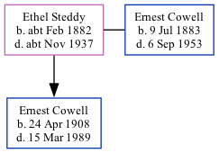

Ethel Maud Cowell (née Steddy) cFeb 1882 - c1937
[ Home ] | [ Calendar ] | [ Surnames Index ] | [ Family History ]Ethel Steddy, the wife of Ernest Benjamin Cowell (the third cousin twice-removed on the mother's side of Nigel Horne), was born in Chatham, Kent, England c. Feb 18821,2 and married Ernest (a mechanical engineering draughtsman with whom she had 1 child, Ernest Frederick William) in Medway, Kent, England in 19074. On Apr 2, 1911, she lived on 1 Campbell Road, Gravesend, Kent1.
She died c. Nov 1937 in Gravesend, Kent3.
Children
- Ernest Frederick William was born on Apr 24, 1908
Citations
- 1911 Census for England & Wales - Findmypast (was age 29 and the wife of the head of the household)
- England & Wales births 1837-2006 - Findmypast
- England & Wales deaths 1837-2007 - Findmypast
- England & Wales, FreeBMD Marriage Index: 1837-1915 Online publication - Provo, UT, USA: The Generations Network, Inc., 2006.Original data - General Register Office. England and Wales Civil Registration Indexes. London, England: General Register Office. © Crown copyright. Published by permission of the Cont
Media
England & Wales marriages 1837-2005 Transcription - BMD-M-1907-2-AZ-000082-107
England & Wales births 1837-2006 - BMD/B/1882/1/AZ/000539/181
England & Wales deaths 1837-2007 - BMD/D/1937/4/AZ/000199/089
Family Tree
Generated by Ged2Site. Last updated on Jul 20, 2025